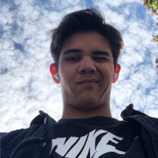

Cosmin-Stefan Glod

Rezumat
Sunt un student pasionat de tehnologie si muzica.
Educatie
- Scoala Gimnaziala Secuieni (2015-2019)
- Colegiul National Gheorghe Vranceanu - Matematica-Informatica (2019-2023)
- Universitatea din Bucuresti - Facultatea de Matematica si Informatica (2023- present)
Experienta de lucru
Nimic, 0, nu am lucrat niciodata.
Sunt in primul an de facultate si am considerat ca e mai important sa ma axez momentan pe facultate.
Invat in fiecare zi sa ajung cat mai bun. In acest an ma axez pe web development.
Skills
- Stiu sa instalez un windows :))
- C++ and Python
- Sunt comunicativ si prietenos
- Sunt muncitor si realizez tot ce imi propun
Premii si certificari
- Premiul 1 la o olimpiada de matematica din clasele primare
- Bacalaureat
- Limba si literatura romana : 8.70
- Matematica M1 : 10
- Informatica : 10
- Admis la Facultatea de Matematica si Informatica din cadrul Universitatii din Bucuresti
- Beneficiez de bursa de performanta
Altele